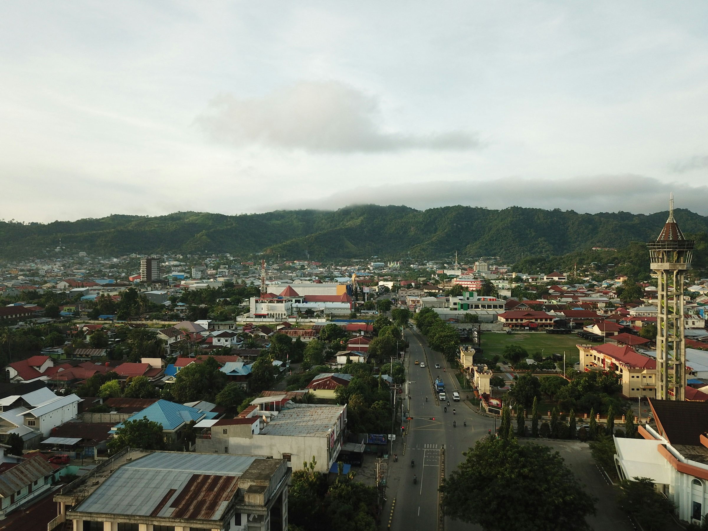
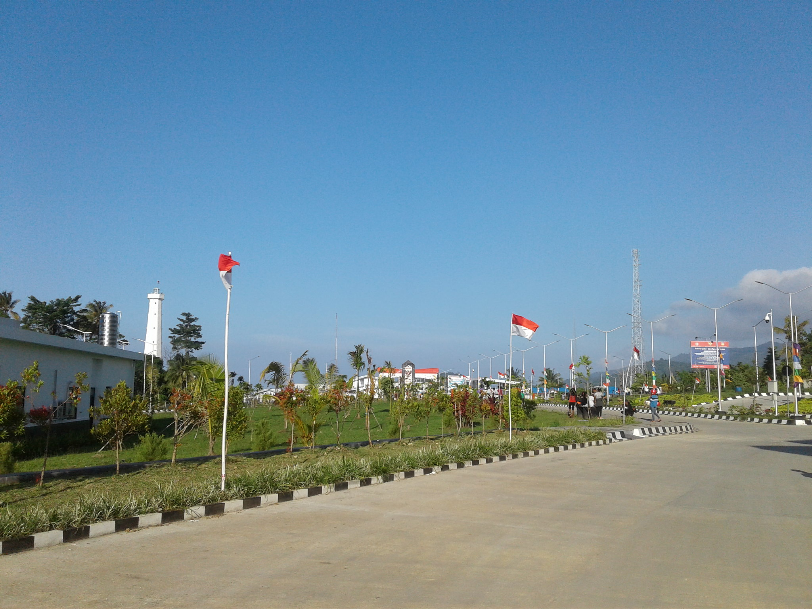
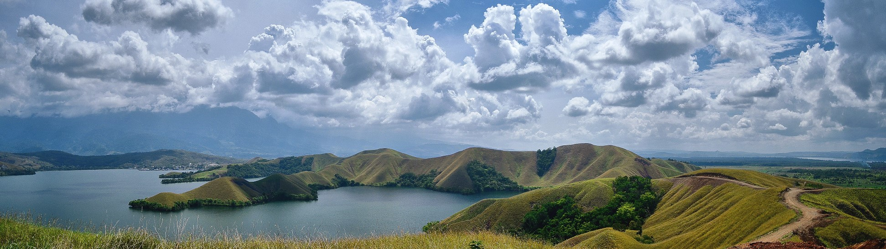
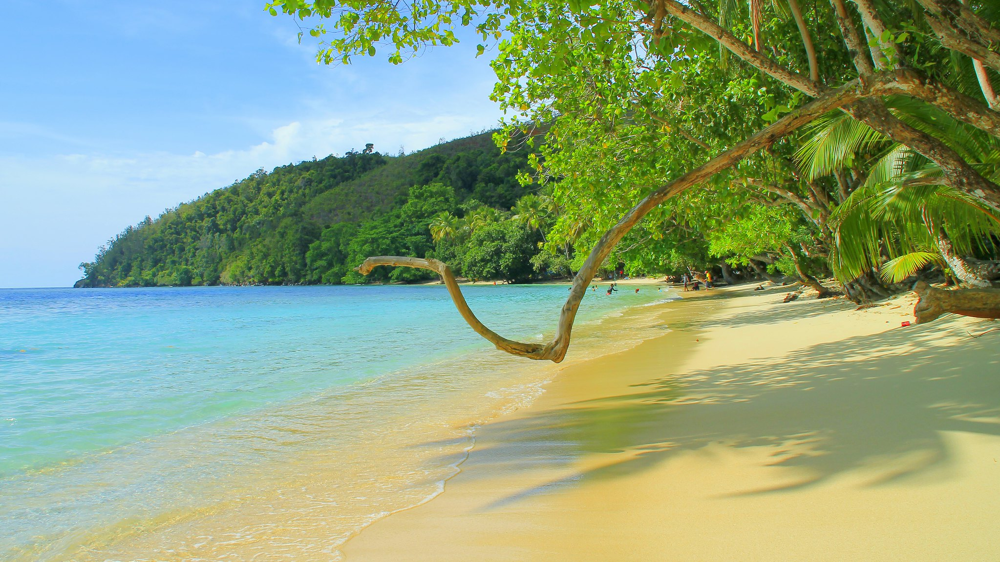

Sejarah

Nama Jayapura secara harfiah berarti "Kota Kemenangan" (dari kata
"Jaya" yang berarti kemenangan, dan "Pura" yang berarti kota dalam
bahasa Sanskerta). Kota ini awalnya bernama Hollandia saat masa
penjajahan Belanda, kemudian berganti nama menjadi Kota Baru dan
Sukarnopura, sebelum akhirnya resmi menjadi Jayapura pada tahun
1968.
Jayapura memiliki sejarah yang panjang dalam hubungannya dengan
kolonialisme dan perjuangan kemerdekaan Indonesia di wilayah timur,
serta perannya yang strategis dalam Perang Dunia II sebagai markas
militer Sekutu di bawah komando Jenderal Douglas MacArthur.
Geografis

Jayapura terletak di pesisir utara Pulau Papua, menghadap langsung
ke Samudra Pasifik, dan dikelilingi oleh pegunungan Cycloop yang
menjulang di belakang kota. Kondisi geografis kota ini sangat
bervariasi, dengan dataran pesisir yang relatif sempit dan
perbukitan yang mendominasi daerah pedalamannya. Jayapura berada
pada ketinggian sekitar 0-700 meter di atas permukaan laut. Kota ini
dialiri oleh beberapa sungai kecil dan anak sungai yang bermuara ke
Teluk Yos Sudarso, menjadikan wilayah pesisirnya penting dalam hal
transportasi dan aktivitas ekonomi. Sebagai ibu kota provinsi,
Jayapura menjadi pusat pemerintahan, ekonomi, dan pendidikan di
Papua.
Wisata
Jayapura dikenal dengan kekayaan alam dan budaya yang luar biasa.
Kota ini menawarkan destinasi wisata alam yang mempesona, mulai dari
pantai, danau, hingga situs sejarah yang penting.
Danau Sentani

Danau Sentani adalah salah satu destinasi wisata utama di
Jayapura. Terletak di kaki pegunungan Cycloop, danau ini
menawarkan pemandangan yang menakjubkan dan menjadi pusat
kehidupan bagi beberapa desa yang berada di sekitarnya. Wisatawan
dapat menikmati keindahan danau sambil menjelajahi pulau-pulau
kecil yang ada di dalamnya, atau menyaksikan acara tahunan
Festival Danau Sentani yang menampilkan budaya dan tradisi
masyarakat setempat.
Pantai Harlem

Pantai Harlem adalah salah satu destinasi tersembunyi yang indah
di Jayapura, Papua, terkenal dengan pasir putihnya yang halus dan
air laut yang jernih. Meskipun membutuhkan perjalanan perahu
sekitar satu jam dari Jayapura, keindahan yang ditawarkan pantai
ini sepadan dengan usahanya. Dikelilingi oleh hutan tropis yang
lebat, Pantai Harlem menawarkan suasana tenang dan alami,
menjadikannya tempat yang ideal bagi wisatawan yang mencari
ketenangan dari hiruk-pikuk kota. Selain bersantai di tepi pantai,
pengunjung dapat menikmati kegiatan seperti snorkeling dan
menyelam untuk menjelajahi terumbu karang yang masih alami serta
keanekaragaman hayati bawah lautnya. Dengan air yang tenang dan
pemandangan matahari terbenam yang memukau, Pantai Harlem
memberikan pengalaman liburan yang sempurna untuk menikmati
keindahan alam Papua. Keindahan terpencilnya membuat pantai ini
tetap terjaga dari keramaian wisatawan, menjadikannya surga
tersembunyi bagi pencinta alam.